Page dewarping
Flattening images of curled pages, as an optimization problem.
Overview
A while back, I wrote a script to create PDFs from photos of hand-written text. It was nothing special – just adaptive thresholding and combining multiple images into a PDF – but it came in handy whenever a student emailed me their homework as a pile of JPEGs. After I demoed the program to my fiancée, she ended up asking me to run it from time to time on photos of archival documents for her linguistics research. This summer, she came back from the library with a number of images where the text was significantly warped due to curled pages.
So I decided to write a program that automatically turns pictures like the one on the left below to the one on the right:
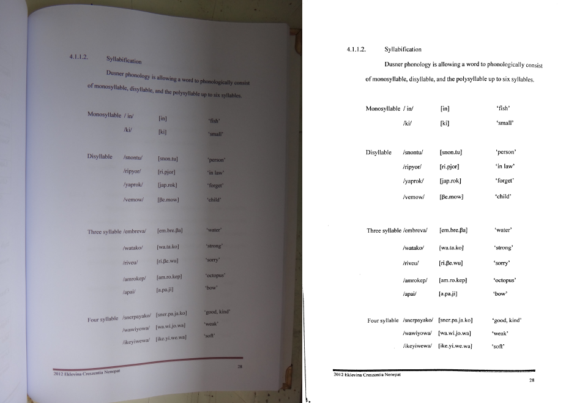
As with every project on this blog, the code is up on github. Also feel free to skip to the results section if you want a sneak peek of some more before-and-after shots.
Background
I am by no means the first person to come up with a method for document image dewarping – it’s even implemented in Dan Bloomberg’s open-source image processing library Leptonica – but when it comes to understanding a problem, there’s nothing quite like implementing it yourself. Aside from browsing through the Leptonica code, I also skimmed a few papers on the topic, including a summary of the results of a dewarping contest, as well as an article about the contest-winning Coordinate Transform Model (CTM) method.
Both the Leptonica dewarping method and the CTM method share a similar hierarchical problem decomposition:
-
Split the text into lines.
-
Find a warp or coordinate transformation that makes the lines parallel and horizontal.
To me, Leptonica’s approach to the second subproblem seems a bit ad-hoc compared to CTM’s 3D “cylinder” model. To be honest, I had a bit of trouble deciphering the CTM paper, but I liked the idea of a model-based approach. I decided to create my own parametric model where the appearance of the page is determined by a number of parameters:
-
a rotation vector \(\mathbf{r}\) and a translation vector \(\mathbf{t}\), both in \(\mathbb{R}^3\), that parameterize the 3D orientation and position of the page
-
two slopes \(\alpha\) and \(\beta\) that specify the curvature of the page surface (see spline plots below)
-
the vertical offsets \(y_1, \ldots, y_n\) of \(n\) horizontal spans on the page
-
for each span \(i \in \{ 1, \ldots, n \}\), the horizontal offsets \(x_i^{(1)}, \ldots, x_i^{(m_i)}\) of \(m_i\) points in the horizontal span (all at vertical offset \(y_i\))
The page’s 3D shape comes from sweeping a curve along the local \(y\)-axis (top-to-bottom direction). Each \(x\) (left-to-right) coordinate on the page maps to a displacement \(z\) of the page surface. I model the horizontal cross-section of the page surface as a cubic spline whose endpoints are fixed at zero. The shape of the spline can be specified completely by its slopes \(\alpha\) and \(\beta\) at the endpoints:
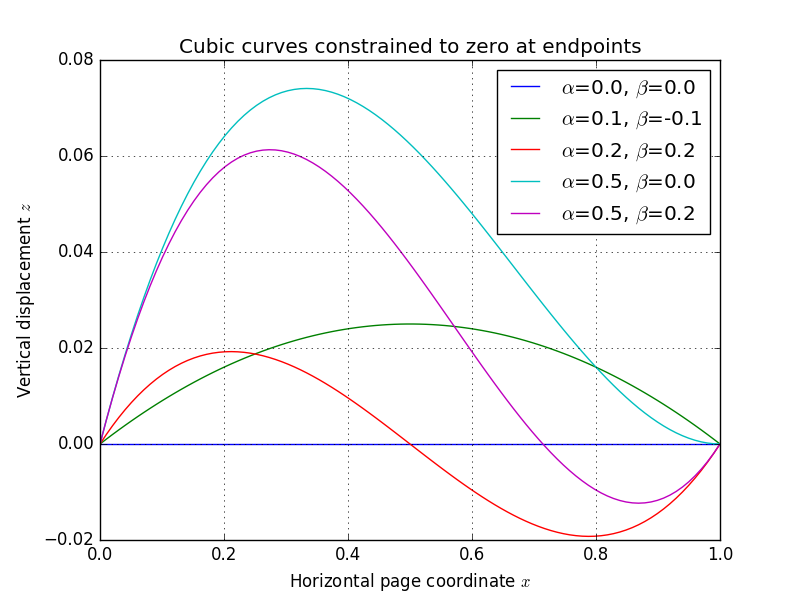
As the plot shows, changing the slope parameters gives a variety of “page-like” curves. Below, I’ve generated an animation that fixes the page dimensions and all \((x, y)\) coordinates, while varying the pose/shape parameters \(\mathbf{r}\), \(\mathbf{t}\), \(\alpha\), and \(\beta\) – you can begin to appreciate that the parameter space spans a useful variety of page appearances:
Importantly, once the pose/shape parameters are fixed, each \((x, y)\) coordinate on the page is projected to a determined location on the image plane. Given this rich model, we can now frame the entire dewarping puzzle as an optimization problem:
-
identify a number of keypoints along horizontal text spans in the original photograph
-
starting from a naïve initial guess, find the parameters \(\mathbf{r}\), \(\mathbf{t}\), \(\alpha\), \(\beta\), \(y_1\), \(\ldots\), \(y_n\), \(x_1^{(1)}\), \(\ldots\), \(x_n^{(m_n)}\) which minimize the reprojection error of the keypoints
Here is an illustration of reprojection before and after optimization:
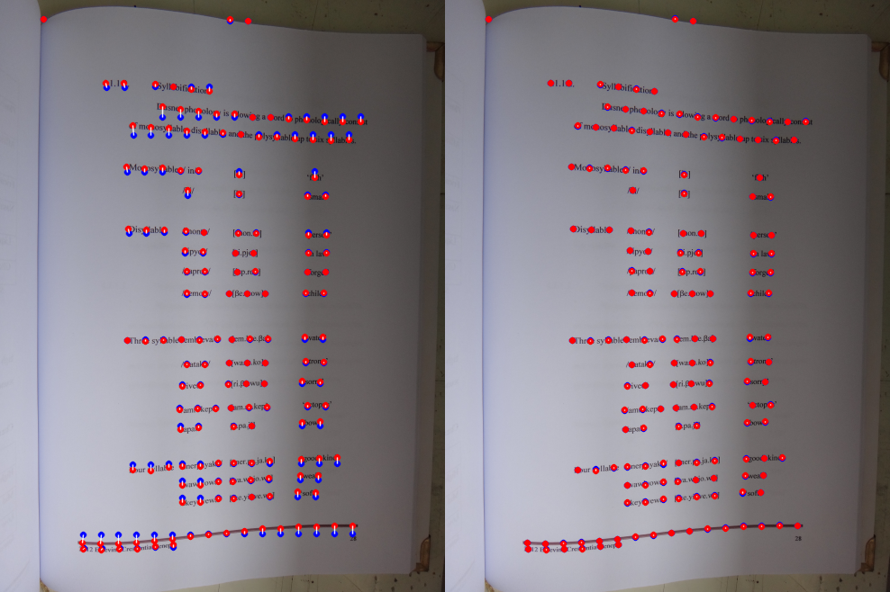
The red points in both image are detected keypoints on text spans, and the blue ones are reprojections through the model. Note that the left image (initial guess) assumes no curvature at all, so all blue points are collinear; whereas the right image (final optimization output) has established the page pose/shape well enough to place almost all of the blue points on top of each corresponding red point.
Once we have a good model, we can isolate the pose/shape parameters, and invert the resulting page-to-image mapping to dewarp the entire image. Of course, the devil is in the details.
Procedure
Here is a rough description of the steps I took.
-
Obtain page boundaries. It’s a good idea not to consider the entire image, as borders beyond the page can contain lots of garbage. Instead of intelligently identifying page borders, I opted for a simpler approach, just carving out the middle hunk of the image with fixed margins on the edges.
-
Detect text contours. Next, I look for regions that look “text-like”. This is a multi-step process that involves an initial adaptive threshold:
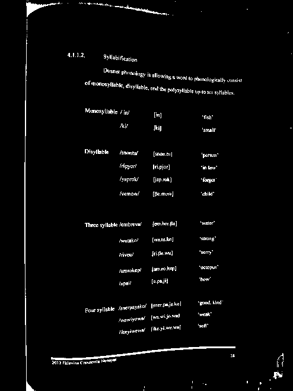
…morphological dilation by a horizontal box to connect up horizontally adjacent mask pixels:
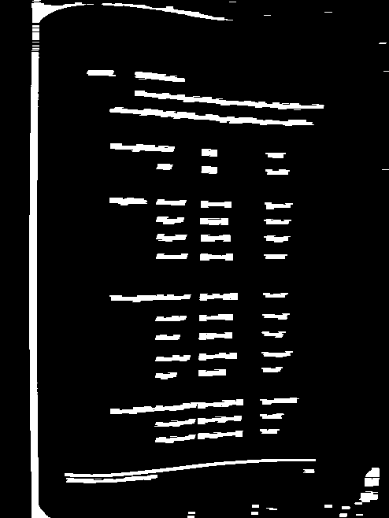
…erosion by a vertical box to eliminate single-pixel-high “blips”:
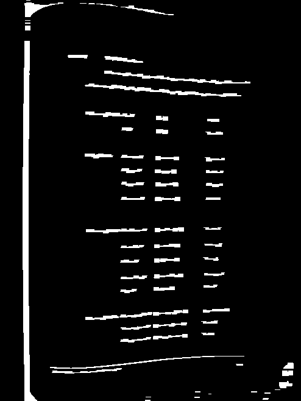
and finally, connected component analysis with a filtering step to eliminate any blobs which are too tall (compared to their width) or too thick to be text. Each remaining text contour is then approximated by its best-fitting line segment using PCA, as shown here:
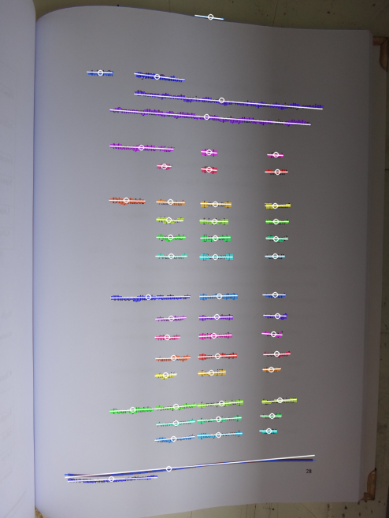
Since some of the images that my fiancée supplied were of tables full of vertical text, I also specialized my program to attempt to detect horizontal lines or rules if not enough horizontal text is found. Here’s an example image and detected contours:
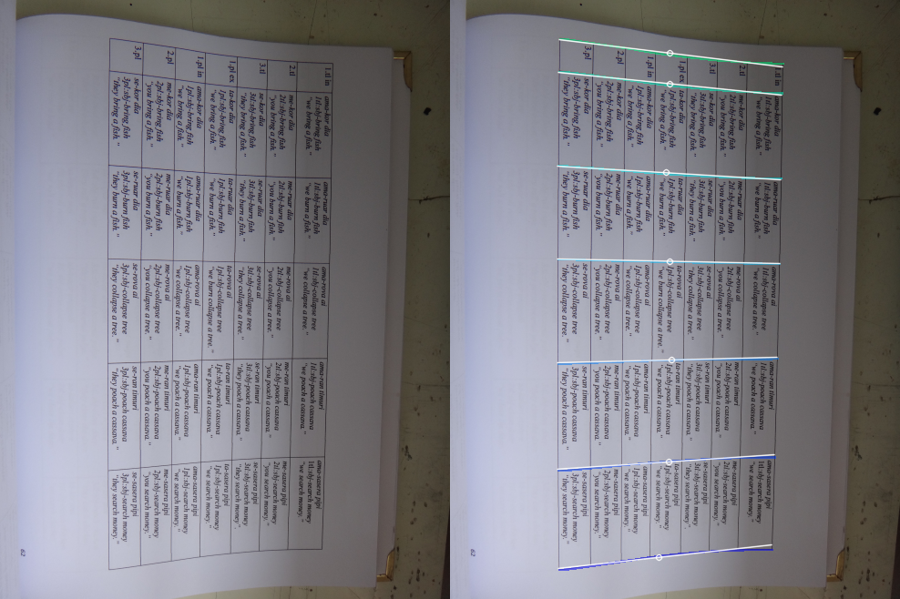
-
Assemble text into spans. Once the text contours have been identified, we need to combine all of the contours corresponding to a single horizontal span on the page. There is probably a linear-time method for accomplishing this, but I settled on a greedy quadratic method here (runtime doesn’t matter much here since nearly 100% of program time is spent in optimization anyways).
Here is pseudocode illustrating the overall approach:
edges = [] for each contour a: for each other contour b: cost = get_edge_cost(a, b) if cost < INFINITY: edges.append( (cost, a, b) ) sort edges by cost for each edge (cost, a, b) in edges: if a and b are both unconnected: connect a and b with edge eBasically, we generate candidate edges for every pair of text contours, and score them. The resulting cost is infinite if the two contours overlap significantly along their lengths, if they are too far apart, or if they diverge too much in angle. Otherwise, the score is a linear combination of distance and change in angle.
Once the connections are made, the contours can be easily grouped into spans; I also filter these to eliminate any that are too small to be useful in determining the page model.
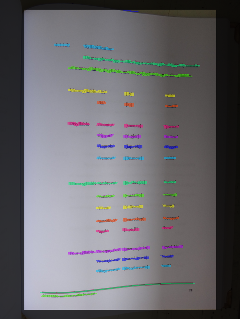
Above, you can see the span grouping has done a good job amalgamating the text contours because each line of text has its own color.
-
Sample spans. Because the parametric model needs discrete keypoints, we need to generate a small number of representative points on each span. I do this by choosing one keypoint per 20 or so pixels of text contour:
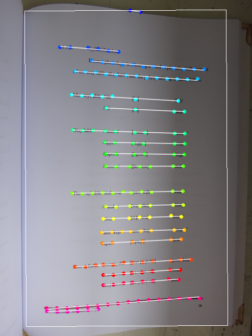
-
Create naïve parameter estimate. I use PCA to estimate the mean orientation of all spans; the resulting principal components are used to analytically establish the initial guess of the \(x\) and \(y\) coordinates, along with the pose of a flat, curvature-free page using
cv2.solvePnP. The reprojection of the keypoints will be accomplished by sampling the cubic spline to obtain the \(z\)-offsets of the object points and callingcv2.projectPoints. to project into the image plane. -
Optimize! To minimize the reprojection error, I use
scipy.optimize.minimizewith the'Powell'solver as a black-box, derivative-free optimizer. Here’s reprojection again, before and after optimization:Nearly 100% of the program runtime is spent doing this optimization. I haven’t really experimented much with other solvers, or with using a specialized solver for nonlinear least squares problems (which is exactly what this is, by the way). It might be possible to speed up the optimization a lot!
-
Remap image and threshold. Once the optimization completes, I isolate the pose/shape parameters \(\mathbf{r}\), \(\mathbf{t}\), \(\alpha\), and \(\beta\) to establish a coordinate transformation. The actual dewarp is obtained by projecting a dense mesh of 3D page points via
cv2.projectPointsand supplying the resulting image coordinates tocv2.remap. I get the final output withcv2.adaptiveThresholdand save it as a bi-level PNG using Pillow. Again, before and after shots:
Results
I’ve included several example images in the github repository to illustrate how the program works on a variety of inputs. Here are the images, along with the program output:
boston_cooking_a.jpg:
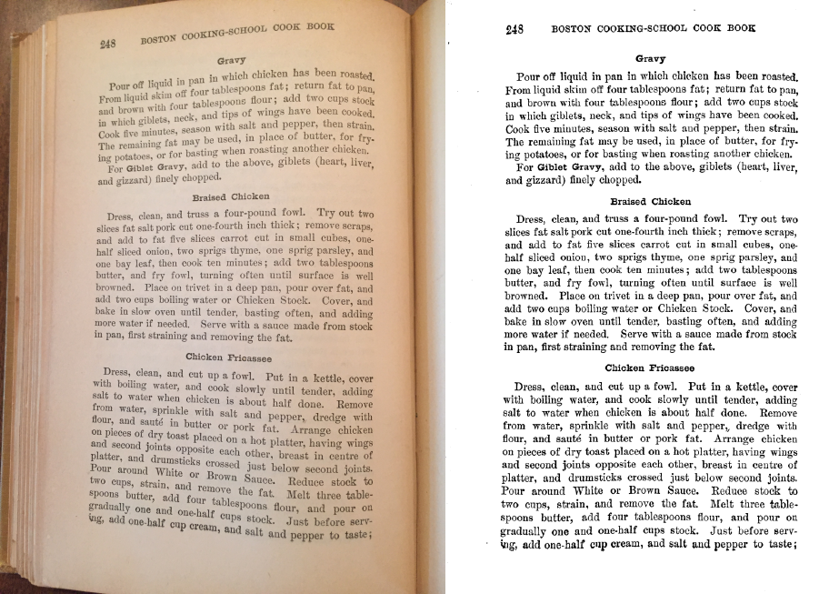
boston_cooking_b.jpg:
linguistics_thesis_a.jpg:
linguistics_thesis_b.jpg:
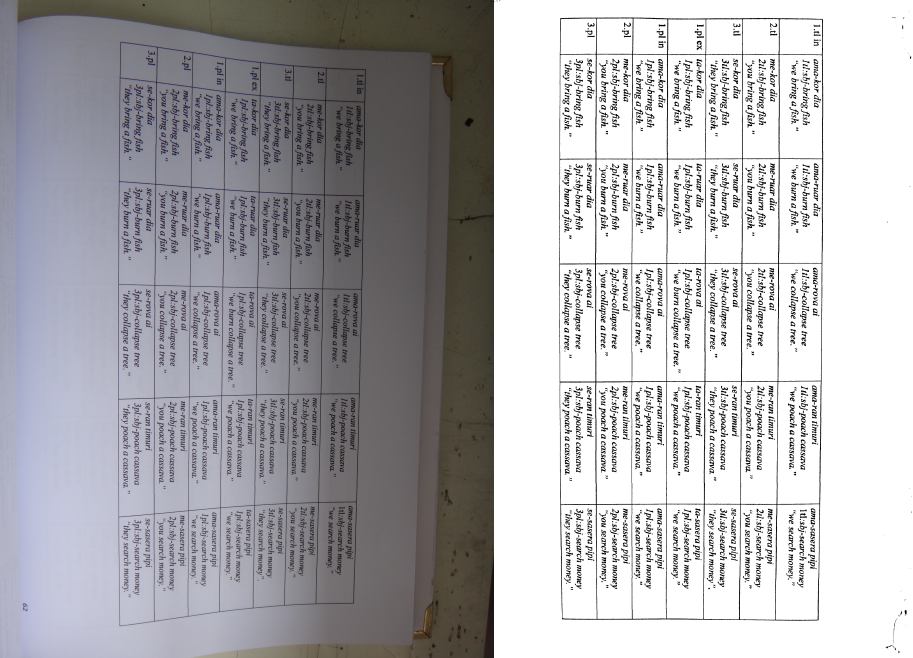
I also compiled some statistics about each program run (take the runtimes with a grain of salt, this is for a single run on my 2012 MacBook Pro):
| Input | Spans | Keypoints | Parameters | Opt. time (s) | Total time (s) |
|---|---|---|---|---|---|
| boston_cooking_a.jpg | 38 | 554 | 600 | 23.3 | 24.8 |
| boston_cooking_b.jpg | 38 | 475 | 521 | 18.0 | 18.8 |
| linguistics_thesis_a.jpg | 20 | 161 | 189 | 5.1 | 6.1 |
| linguistics_thesis_b.jpg | 7 | 89 | 104 | 4.2 | 5.3 |
You can see these are not exactly small optimization problems. The smallest one has 89 parameters in the model, and the largest has 600. Still, I’m sure the optimization speed could be improved by trying out different methods and/or using a compiled language.
Wrapping up
The way this project unfolded represents a fairly typical workflow for me these days: do a bit of reading to collect background knowledge, and then figure out how to formulate the entire problem as the output of some optimization process. I find it’s a pretty effective way of tackling a large number of technical problems. Although I didn’t think of it at the time, the overall approach I took here is reminiscent of both deformable part models and active appearance models, though not as sophisticated as either.
Both Leptonica and the CTM method go one step further than I did, and try to model/repair horizontal distortion as well as vertical. That would be useful for my code, too – because the cubic spline is not an arc-length parameterization, the text is slightly compressed in areas where the cubic spline has a large slope. Since this project was mostly intended as a proof-of-concept, I decided not to pursue the issue further.
Before putting up the final code on github, I tried out using the
automated Python style checker Pylint for
the first time. For some reason, on its first run it informed me that
all of the cv2 module members were undefined, leading to an initial
rating of -6.88/10 (yes, negative). Putting the line
# pylint: disable=E1101
near the top of the file made it shut up about that. After tweaking the program for a while to make Pylint happier, I got the score up to 9.09/10, which seems good enough for now. I’m not sure I agree 100% with all of its default settings, but it was interesting to try it out and learn a new tool.
I do all of my coding these days in
GNU Emacs, which usually suits
my needs; however, messing around with Pylint led me to discover a
feature I had never used. Pylint is not fond of short variable names
like h (but has no problem with i, go figure). If I use the normal
Emacs query-replace function bound to M-% and try to replace h
with height everywhere, I have to pay close attention to make sure
that it doesn’t also try to replace the h other identifiers (like
shape) as well. A while back, I discovered I could sidestep this by
using query-replace-regexp instead, and entering
the regular expression \bh\b as the replacement text (the \b
stands for a word boundary, so it will only match the entire “word”
h). On the other hand, it’s a bit more work, and I thought there
must be a better place to do “whole-word” replacement. A bunch of
Googling led me to
this Stack Exchange answer,
which says that using the universal-argument command C-u in Emacs
before a query-replace will do exactly what I want. I never knew
about universal-argument before – always good to learn new tricks!
At this point, I don’t anticipate doing much more with the dewarping code. It could definitely use a thorough round of commenting, but the basics are pretty much spelled out in this document, so I’ll just slap a link here on the github repo and call it a day. Who knows – maybe I’ll refer back to this project again the next time I teach computer vision…
Comments
Amazing work !
great job and good explanation.
Love this Post. Great explanation.
This looks like it was a great project, thanks for sharing it! It would be interesting to see how it performs with a high resolution, well illuminated page. Since the code is open maybe I'll give it a shot. :)
Consider mentioning Dan Bloomberg as the author of the original work as well as Leptonica. :)
Updated to add.
I am the Supreme Idiot. Hi! Could you turn this into a EXE that would execute on Windows 7? What in the world are Py files?
TIA
scult1@gmail.com
.py are Python source code files. If you install Python for Windows then you can run them.
Awesome job and good explanation! *hugefan.png*
Thanks a ton!
Actually `universal-argument` is used quite a lot in places where you want to alter the original command slightly. I'm using [Spacemacs](https://github.com/syl20bnr/sp... though and I'm used to performing a Vim-style replacement which automatically utilizes regex syntax.
Pylint is very opinionated and overwhelms one with false-positive warnings when used out of the box, without a custom configuration file.
Pyflakes is gentler. (I tend to use flake8 because it augments pyflakes with a config file letting you disable some warnings, but flake8 also pulls in pep8 which nitpicks my style in a bit too rigid way.)
Thanks - maybe I'll check it out on my next Python project.
Great article and implementation!
This free app can also dewarp curled book pages and get decent image quality
https://itunes.apple.com/app/i...
Comments are closed, see here for details.